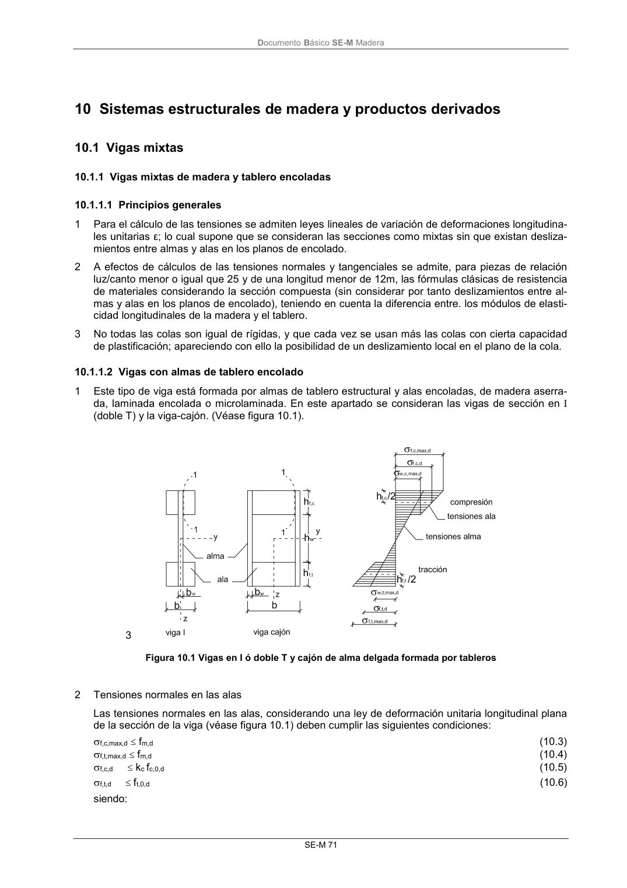

DB-SE-M Madera · edición 2019-12-20 · capa oficial
Documento DB-SE-M-oficial · SHA-256 del PDF 26b5819839ebfda78b0b119c5e76a0a37773b0d763c05688541870075df93718
Página física 77 de 132.
Copia fiel del PDF fuente · Fuente oficial
Ficha de la disposición en la fuente oficial
Formato: Texto de la página (Markdown)
Documento Básico SE-M Madera SE-M 71 10 Sistemas estructurales de madera y productos derivados 10.1 Vigas mixtas 10.1.1 Vigas mixtas de madera y tablero encoladas 10.1.1.1 Principios generales 1 Para el cálculo de las tensiones se admiten leyes lineales de variación de deformaciones longitudina- les unitarias ε; lo cual supone que se consideran las secciones como mixtas sin que existan desliza- mientos entre almas y alas en los planos de encolado. 2 A efectos de cálculos de las tensiones normales y tangenciales se admite, para piezas de relación luz/canto menor o igual que 25 y de una longitud menor de 12m, las fórmulas clásicas de resistencia de materiales considerando la sección compuesta (sin considerar por tanto deslizamientos entre al- mas y alas en los planos de encolado), teniendo en cuenta la diferencia entre. los módulos de elasti- cidad longitudinales de la madera y el tablero. 3 No todas las colas son igual de rígidas, y que cada vez se usan más las colas con cierta capacidad de plastificación; apareciendo con ello la posibilidad de un deslizamiento local en el plano de la cola. 10.1.1.2 Vigas con almas de tablero encolado 1 Este tipo de viga está formada por almas de tablero estructural y alas encoladas, de madera aserra- da, laminada encolada o microlaminada. En este apartado se consideran las vigas de sección en I (doble T) y la viga-cajón. (Véase figura 10.1). 3 Figura 10.1 Vigas en I ó doble T y cajón de alma delgada formada por tableros 2 Tensiones normales en las alas Las tensiones normales en las alas, considerando una ley de deformación unitaria longitudinal plana de la sección de la viga (véase figura 10.1) deben cumplir las siguientes condiciones: f,c,max,d fm,d (10.3) f,t,max,d fm,d (10.4) f,c,d kc fc,0,d (10.5) f,t,d ft,0,d (10.6) siendo:
